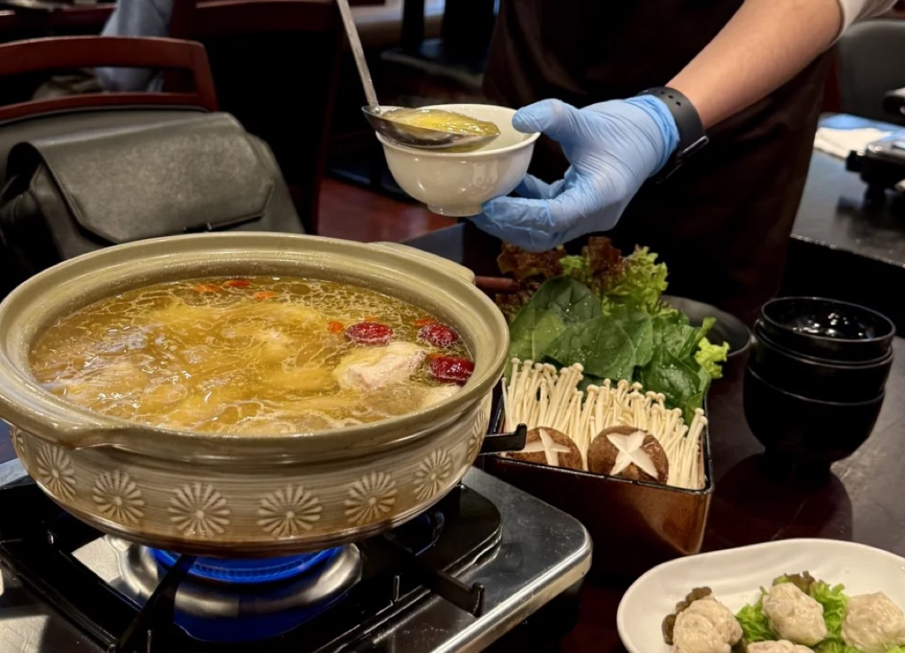
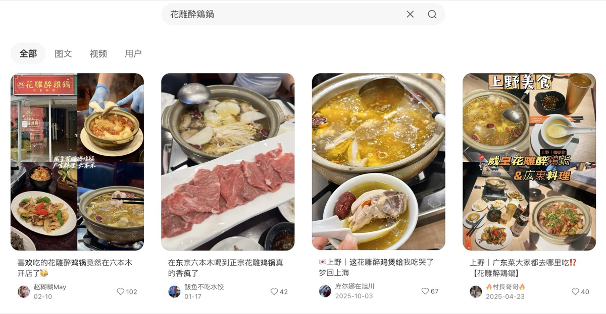

プロジェクト概要
- クライアント
- 花雕酔鶏鍋（上野店・六本木店）
- 課題
- 新規店舗オープンに伴う即時的な認知拡大と、訪日観光客・在日中国人向けの集客ブースト。初期段階での「行列の絶えない店」というブランディング構築。
- ソリューション
- PROTECHによる小紅書（RED）を中心としたKOL/KOCマーケティング。UGC（口コミ）の連鎖を生み出すメニュー設計と「映え」導線の構築。
上野と六本木という激戦区に新規オープンした本格中華火鍋店「花雕酔鶏鍋（ファオディアオ・ズイジー・グオ）」。オープン前から小紅書（RED）を活用した戦略的なマーケティングを展開し、オープン初日から連日満席、予想を大きく上回る売上を記録しています。
ここでは、その圧倒的な成功を裏付ける具体的なSNS戦略の核心部分を紐解きます。
プロジェクトの背景：激戦区での新規参入
中華料理店がひしめく上野、そして高級飲食店の激戦区である六本木。これらのエリアで新規店舗をオープンするにあたり、最も大きな課題は「いかに早く認知を獲得し、初速をつけるか」でした。
日本国内の予約サイト（食べログなど）だけでは、口コミが集まるまでに数ヶ月の時間を要します。そこで目を向けたのが、日本を訪れる中国人観光客（インバウンド層）と在日中国人が日常的に利用する口コミSNSプラットフォーム「小紅書」でした。

実施したマーケティング戦略
① KOC・KOLを活用した「プレオープン戦略」
グランドオープンの2週間前から、影響力のあるKOL（キーオピニオンリーダー）や、リアルな口コミを発信するKOC（キーオピニオンコンシューマー）をプレオープンに招待。
「日本に遂に本格的な花雕酔鶏鍋が上陸した！」という熱量の高いレビューを小紅書上に一気に投下し、オープン前の期待値を最高潮まで高めました。

② 「映え」を意識した看板メニューの演出
ただ美味しいだけでなく、SNSでシェアしたくなる「ビジュアルの強さ」が不可欠な要素となります。
名物の「花雕酔鶏鍋」は、鍋に火をつける（フランベする）際のダイナミックな演出や、黄金色のスープのシズル感を強調。これにより、来店した一般客の動画投稿（UGC）が爆発的に増加しました。

③ WeChat朋友圈とGoogle Mapを活用した多角的な引流（集客導線）
小紅書での認知拡大に加え、在日コミュニティの基盤となる「WeChat朋友圈（モーメンツ）」でのクチコミ拡散を並行して実施。さらに、店舗への来店を決定づける「Google Map」のMEO（マップ検索エンジン最適化）を徹底し、SNSで興味を持ったユーザーを確実に来店へと結びつける多角的な引流（インバウンド集客導線）を構築しました。
施策の結果：予測の300%の売上と連日満席
戦略的な情報投下と、ユーザーの行動心理を突いた導線設計の結果、以下のような圧倒的な成果を達成しました。
- オープン初日から連日の「満席（ウェイティング発生）」
- 店舗の月間売上目標を、わずか10日で達成（最終的に予測の300%）
- 小紅書上での関連投稿インプレッションが300万回を突破
- 日本人インフルエンサーにも波及し、国内客の集客も増加
実務への落とし込みと今後の展開
花雕酔鶏鍋の成功は、「良質な商品（料理）」と「戦略的なSNS導線」が噛み合った時に生まれる爆発力を証明しています。
現在は上野・六本木の2店舗のブランド価値をさらに高めつつ、リピーターを獲得するためのWeChatミニプログラムを活用した会員システムの導入を計画しています。